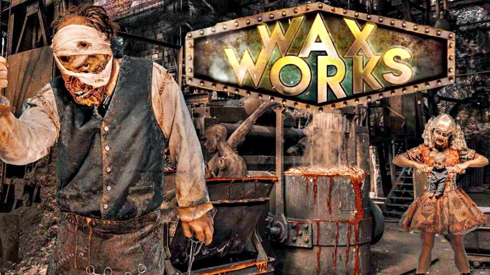

James Hello World
Journey through an abandoned carnival ride where cruel carnie folk still linger in the shadows in Dark Ride: Castle of Chaos. The carnival has become
a refuge for freaks and carnies. Dark Ride will lead brave visitors through a treacherous path and into the bowels of a long-neglected attraction, as
sinister shadows and horrifying scenes cast the gloom over the once pleasant ride. It’s everyone’s worst nightmare, being helplessly trapped inside an
abandoned carnival ride without a way out. A fulfilling life ensures a soul safe passage into eternity, but what happens to the souls of soldiers slain in battle? Enter the hair-raising
Shadow Lands maze and fight off demon samurais whose souls are cursed to rot within the depths of purgatory. Guests will embark on a quest through
a sacred shrine, an ancient Japanese temple and into the midst of the shadow lands. This Halloween season, we will present After Dark: Scary Movie Screenings. On two eerie evenings, there will be free movie
screenings which are "A Quiet Place" and "Ouija: Origin of Evil", complete with complimentary snacks, drinks and a
$3 voucher to enjoy food from the Editions kitchens. SCP Foundation is a secret organization entrusted by governments around the globe to contain and study
anomalous individuals, entities, locations, objects, and phenomena operating outside the bounds of natural
law. If left uncontained, the objects would pose a direct threat to human life and humanity's perceptions of
reality and normalcy. SCP-096: Don't look my face, whether it be directly, via video recording, or even a photograph, if you look at me, I will
begin running to the person who viewed my face and kill you. Massacre Town Streets is the original and still most terrifying scare zone that started it all. Monsters and ghost
prowl the streets and inhabit the fog. Beware the notoriously startling Sliders who lunge from every fog-filled
corner of the land. They wander their crypts preying on unsuspecting visitors, looking for victims to drag back. An interpretation of Wewe Gombel will be creeping around the Phobia Haunted House this Halloween.
Let your kids immerse in the horror while at the same time, enjoy the parade, dance shows and activities. Fret not,
they’re all kids-friendly so they will not be harmed. Survive the wrath of the murderous 7-foot tall creature that haunts the old woods surrounding The Hollow in the new
maze, Pumpkin Eater. To escape the sinister Pumpkin Eater’s wrath all that enter must go on a quest through
the silent town of victims, face a cave of crawling insects and solve the labyrinth of thorns that blocks the way out. Mysterious lights and strange noises have begun to emanate from the eerie abandoned wax museum. The once prominent
plastic surgeon, Dr. Augustus Scratch, has been seen tinkering at night and is now ready to show off his
beautiful yet terrifying life-like masterpieces of hot molten wax and bloody flesh. The theme of the horror house is based on highly popular Korean film, “Train to Busan”. The Train to Busan VR tour
is a fully immersive VR experience that is full of surprises at every turn. One second you find yourself standing
in the train and the next moment you’re fending off danger from hordes of zombie. The Virtual Reality tour
show based on the highly popular Korean film, “Train to Busan” is interesting and exciting. The Train to
Busan VR Tour may be too intense for children. There will be various types of merchandise, gift, or souvenirs which are related to the
Halloween for everyone to choose and buy it. The fair prices of all the Halloween costumes and props
are all waiting for you to get it. Therefore, you can enjoy the Halloween Party very much.DARK RIDE (Horror level ☢☢☢)
SHADOW LAND (Horror level ☢☢☢)
AFTER DARK: SCARY MOVIE SCREENING (Horror level ☢☢)
SCP FOUNDATION (Horror level ☢☢☢☢☢)
MASSACRE TOWN STREET (Horror level ☢☢☢☢)
HALLOWEEN FUN: PHOBIA (Horror level ☢)
PUMPKINHEAD (Horror level ☢☢☢☢)

WAX WORKS (Horror level ☢☢☢☢)

HORROR HOUSE (Horror level ☢☢☢)
HALLOWEEN MERCHANDISE SHOP (Horror level ☢)